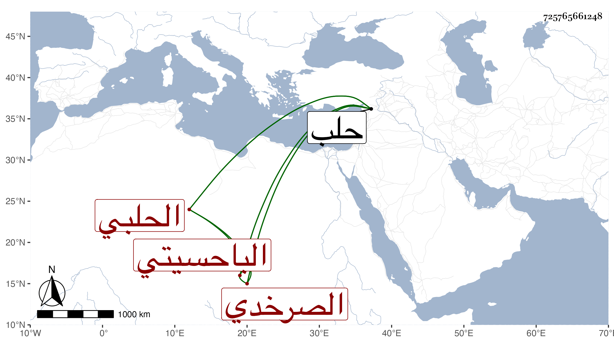

0902Sakhawi.DawLamic.ITO20230111-ara1.EIS1600.725765661248
Biography ID: 725765661248
16
محمد بن محمد بن محمد بن يوسف بن علي ناصر الدين بن البدر الصرخدي الأصل الحلبي الباحسيتي بموحدة ثم حاء وسين مهملتين مكسورتين ثم تحتانية ساكنة ثم فوقانية نسبة لباحسينا خطة بحلب كان عدلا بها . ولد تقريبا سنة ست وخمسين وسبعمائة وسمع من الظهير محمد بن عبد الكريم بن العجمي بعض ابن ماجة وحدث . وكان خيرا دينا عدلا منجمعا عن الناس له طلب وبيده إمامة مات قبل سنة أربعين بحلب رحمه الله .
